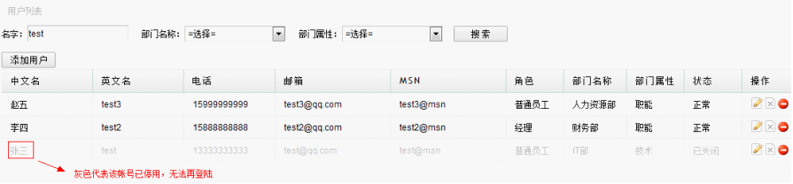
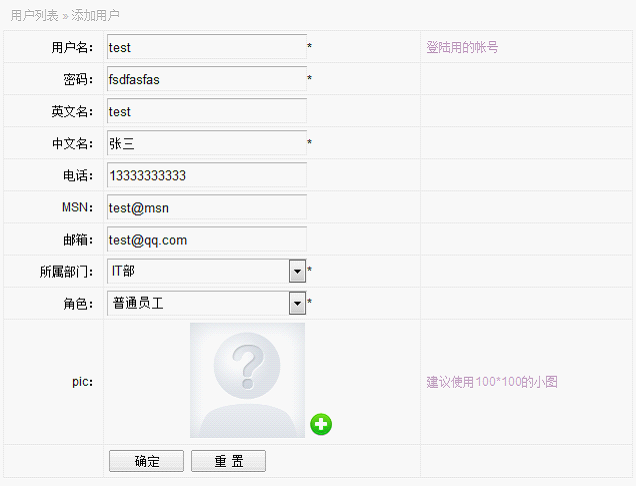
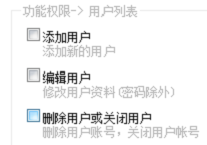

列表处列出系统中所有用户信息，如姓名，英文名，联系方式，系统角色，部门名称等， 如下图：
功能一：搜索，可按名字(输入中英文都可以)，部门，属性筛选。

功能二：添加用户，点击列表页的添加用户按钮，可以添加系统用户，如下图填写信息即可，后面有星号*的为必填项，填完信息保存即可。

功能三：编辑用户，编辑用户与添加用户界面一样，需要注意的是，如果更改了用户的部门或角色，被编辑的用户需要退出重新登录，才拥有新部门能看到的菜单权限与系统操作权限。
功能四：删除用户与关闭帐号，删除用户与关闭用户后，用户都不能再登录系统进行操作。不同的是，删除用户将彻底从系统中把用户删除；关闭用户只是将用户停用，并未删除。建议初离职的人员先停用，因为在系统中涉及一些同部门的权限继承关系，如订单，若彻底删除了原订单的创建人，则无法查找原单创建人所属的部门。
另附对用户管理的权限分配，入口，功能插件->权限分配->用户列表：
